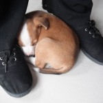

Biting,On Your Own Time
13 August 2010 | 2 Comments
Roxy favourite thing to do (when she’s excited) is to bite stuff.
Like our toes. Mine are especially easy targets because I’m wearing slops more often that not.
The distraction technique is partially working.
The yelp technique seems to be having a better effect. This is the rather embarrassing act of basically imitating a puppy playmate; if Roxy bites too hard, you yelp like you’ve been hurt (not too difficult – her teeth are pretty sharp.).
Next step is combining this with downtime. The trick (apparently, like most of the training) is not too make the punishment too shouty / angry. Going to the chill out room (classical music playing almost 24-7. Yo.) isn’t the punishment (because the chill out room is gooood and *hypno-face* you waaaaant to gooooo there) – being alone is the punishment. If you are good, you get to spend time with the humans.
Well, something like that.
Going back to the SOHO for a minute: I don’t have any problems with being a hard ass. Umm…
I will not go and comfort / say hi to Roxy while she’s still whining and whinging (and fecking A, she can whine and whinge. The sounds are so weird. I will attempt to describe them later.) when she’s on her own in the bedroom (and supposed to be sleeping / chilling).
I know that this is good for Roxy (and us) in terms of obedience and a good relationship and all that. But man, it frazzles your head. (0_o)
Photos
12 August 2010 | Comments Off
Okay, okay, I know why you’re here.
Cute puppy pictures.
Here you go. 
Day One
Puppy likes sleeping between feet, meets cats (cats not amused, quelle surprise)

Day Two
Puppy confounds expectations: continues to be cute.


Day Three
Go N.
Your Rambunctiousness increases by 4. Your Sleepiness increases by 2.

Day Four
Somehow manages to pass without photo
Day Five
And the finding of The (One of Two) Ball


Day Six
Feck, has it only been six days?
or
Butt Cats!
What’s that? Too many pictures? You know I like to shoot ‘em up, right?
House Training,Sleeping
12 August 2010 | Comments Off
The first few nights were pretty bad.
But that was kind of expected.
She was quite whiney on her first night in the house, but got much better each night after that.
But what about the puppy, you ask? Oh, you cad!
…
Last night we only got up once to let her out (to “do her business” 1).
This was very good.
I will not discuss size, consistency, colour, shape, of bowel movements (as some parents (of animals or humans) are wont to do), but I will say that it is surprising how quickly you adapt to the everyday ickyness / grossness of it. Just this morning I was following Roxy around the garden on a toilet break (hers) while munching on an apple (mine).
Sort of related: I’m keen on starting all training early.
We’re doing sit and stay and come (erm…) stuff right now, with treats.
I do realise that it’s mostly training us (say it fast enough / at the right time and it looks like she was doing what we said – how awesome?! rofllolbbq!), but hopefully we’re laying some framework type stuff.
So far one of the hardest parts of being a puppy daddy is realising the timing. The days at home seem to last a long time. So much can happen in one day. It’s difficult to keep in mind that these training things take weeks or months to get right.
Not losing your temper is also difficult. Being tired out always makes me snappy (sorry, Jo!), and with the pupista that means being more slightly more aggressive or short tempered than I would like to be. I won’t hit Roxy, but I might pull a toy away slightly harder than I should.
I’m not angry, I’m just disappointed (in myself).
But I’ll get better.
And she’ll get better.
And Stv will make a good puppy daddy.
_______________________
1 – wees and poos. Not dealing crack cocaine. She’s a puppy, for goodness sake!
2 – Idea: remove all references to dog / puppy, drive traffic to site, see what strangers think this blog is about… [Waddayamean there was no 2? Oh, right. Sorry. You ain’t seen me- roight?]
On Your Own Time,Sleeping
11 August 2010 | 4 Comments
This is a bit out of sequence, but: current big task is to get Roxy used to being on her own.
Since I work from home she’ll be spending a lot of time around me. This is groovy.
However, I do need to leave the house during the day occasionally (to buy chocolate or go and drink beer with Evo, for example).
Also, Jo and I are quite social creatures and we like to go out and see people for dinner in the evening.
So, what to do with doggy?
We tried some kennel action yesterday. I had to go out for about two hours to a meeting.
We spent time with her, getting her used to the kennel, gave her a whole bunch of her toys and stuff, but the experiment was basically a failure.
She managed to get out of the enclosure we’d built on the stoop around the kennel and was barking / yowling at the bedroom window.
I suspect the cats (i.e. Sproing) took the opportunity to be less than friendly with her. Fear The Claw.
So, new plan, after more researching: leave her in the house, in a closed off area.
She sleeps in a dog bed next to our bed. For now, we close this off so that she only has access to a bit of the bedroom – the bit with newspaper on the floor.
The plan is to put her there while we’re out, to tire her out by lots of playing before we leave, and to leave her with her toys and a stuffed Kong thingy (which, btw, are silly good.).
Second prong of plan is to put her there during the daytime to get used to being away from Teh Humans.
Which is where she is right now.
Sleeping.
In other news: I am sleepy and am having great trouble concentrating on work.
As you may be able to tell…
Photos,Site news
11 August 2010 | 4 Comments
Hello, world!
Rather than clutter up the main blog with all my ravings about the awesomeness of being a puppy daddy (see OotS #51 for reference), I will place them here.
Our dog is called Roxy, and she is awesome.

I have quite strong views about obedience and behaviour and all that jazz. I’m determined that Roxy will be well behaved and well adjusted.
For starters this means no sitting on the furniture and no sleeping on the bed – that’s human territory.
More later – quite tired, but have lots of work to do!